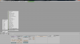
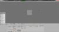
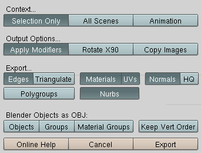
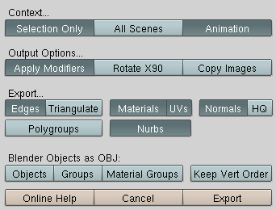
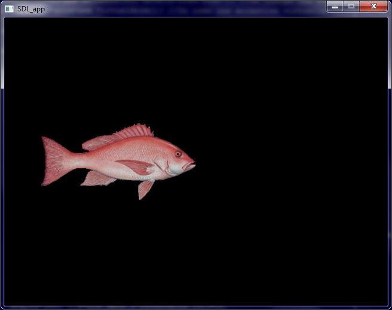

Vous utilisez OpenGL et vous trouvez fastidieux le système de définition de modèles point par point ? Et bien j'ai conçu une petite lib sans prétention qui permet de charger facilement des fichiers .OBJ que vous pouvez obtenir en exportant vos modèles dans ce format, à partir de votre logiciel de modélisation. J'utilise Blender, par conséquent si vous utilisez un autre logiciel vous devrez vous y adapter ;) . A l'heure actuelle, elle gère les modèles statiques comme animés, plusieurs matériaux et une seule texture en tout. Une connaissance des tutoriels Apprenez à programmer en C++ de M@teo21 et Créez des programmes en 3D avec OpenGL de Kayl est requise pour bien comprendre le tutoriel. Voilà, j'espère que ce tutoriel vous plaira :) .
Bien qu'il ne soit pas toujours encodé de la même manière, le format OBJ a une syntaxe particulière. Il se divise en deux fichiers : un fichier .OBJ qui donne toutes les informations sur les sommets et les faces, et un fichier .mtl (comme Material Template Library) qui contient les données sur les matériaux.
On peut décomposer un fichier .OBJ de cette manière :
Indication du fichier .MTL
Définition des sommets
Attribution des faces.
L'indication du fichier .MTL se fait comme ceci :
mtllib mon_fichier.mtl
C'est donc cette ligne qui permet de déterminer où se trouve le .mtl à charger.
Ensuite vient la définition des sommets en position, coordonnées de texture et en normales. Chaque ligne de définition de sommets commence par un "v" comme "vertex", "sommet" en Anglais. La position se note comme ceci :
v X Y Z
Où X, Y et Z sont respectivement les coordonnées X, Y et Z du sommet. Par exemple :
v 0.532 1.265 0.273
Cette ligne permet d'indiquer que l'on crée un sommet de coordonnées (0.532 ; 1.265 ; 0.273). Pour les coordonnées de texture, la ligne sera similaire sauf qu'on mettra un "t" (comme "texture") après le "v" et que nous n'avons que deux axes :
vt X Y
Même principe pour les normales, mais avec "vn" ("n" comme "normal") et trois axes :
vn X Y Z
Maintenant que nous avons une liste de sommets, il s'agit de les ordonner pour former des faces. Votre exportateur est intelligent : il regroupe toutes les faces d'un même matériau ensemble.
Mais comment on sait quel matériau appliquer ?
Grâce à leur nom :
usemtl nom_du_materiau
Ma lib fonctionne avec les faces triangulaires ou les quadrilatères, autrement dit elle accepte les face à trois ou quatre sommets. Pour définir une face, on va assembler les numéros des sommets concernés comme ceci (dans le cas d'un carré) :
f V1/T1/N1 V2/T2/N2 V3/T3/N3 V4/T4/N4
Les V1, V2, V3, V4 sont les numéros des positions ; les T1, T2, T3, T4 sont les numéros des coordonnées de texture ; et les N1, N2, N3, N4 sont les numéros des normales. Par exemple :
f 1/2/3 4/5/6 7/8/9
On définit une face triangulaire dont le premier point est défini par la position n°1, les coordonnées de texture n°2 et les normales n°3 ; et ainsi de suite pour les autres sommets. S'il n'y a pas de textures, vous pourrez avoir une ligne de la sorte :
f 1//2 4//6 7//9
Rien de tel qu'un exemple récapitulatif : le cube !
# Blender3D v249 OBJ File:
# www.blender3d.org
mtllib cube.mtl
v 1.000000 1.000000 -1.000000
v 1.000000 -1.000000 -1.000000
v -1.000000 -1.000000 -1.000000
v -1.000000 1.000000 -1.000000
v 1.000000 0.999999 1.000000
v 0.999999 -1.000001 1.000000
v -1.000000 -1.000000 1.000000
v -1.000000 1.000000 1.000000
vn 0.000000 0.000000 -1.000000
vn 0.000000 0.000000 1.000000
vn 1.000000 -0.000000 0.000000
vn -0.000000 -1.000000 -0.000000
vn -1.000000 0.000000 -0.000000
vn 0.000000 1.000000 0.000000
usemtl Material
s off
f 1//1 2//1 3//1 4//1
f 5//2 8//2 7//2 6//2
f 1//3 5//3 6//3 2//3
f 2//4 6//4 7//4 3//4
f 3//5 7//5 8//5 4//5
f 5//6 1//6 4//6 8//6
Les deux premières lignes sont des commentaires de mon exportateur, et la ligne "s off" signifie "smooth off" mais on ne la prend pas en compte car on peut jouer dessus directement dans notre code avec glEnable(GL_SMOOTH) et glDisable(GL_SMOOTH) . On peut voir que certains points ne sont pas parfaits (0.999999 à la place de 1.000000) mais globalement le contenu du fichier sera fidèle à ce que vous avez modélisé ^^ .
A présent, regardons la syntaxe du format MTL vu que nous nous sommes familiarisés avec le format OBJ. Nous n'utiliserons pas toutes les données, mais le strict nécessaire, ce qui est déjà suffisant. En premier lieu, le nom du matériau, ce qui permet de les identifier lorsque l'on fait appel à "usemtl" :
newmtl nom_du_materiau
Ensuite la couleur globale de l'objet sera la couleur diffuse "Kd" :
Kd R G B
Où R, G et B sont des flottants allant de 0 à 1. Par exemple :
Kd 1.000000 0.500000 0.000000
Vous aurez une couleur orangée. Vérifiez ces données car il se peut qu'elles ne correspondent pas exactement à celles entrées dans votre logiciel de modélisation. Dernier paramètre : la transparence "d" allant de 0 (totalement transparent) à 1 (totalement opaque). Ce sont les seules données prises en compte dans ma lib, néanmoins ce sont les principales. Voici le MTL de notre cube :
# Blender3D MTL File:
# Material Count: 1
newmtl Material
Ns 96.078431
Ka 0.000000 0.000000 0.000000
Kd 0.640000 0.640000 0.640000
Ks 0.500000 0.500000 0.500000
Ni 1.000000
d 1.000000
illum 2
Le résultat sera donc un carré gris et opaque :) !
Nous allons nous attaquer au plus intéressant : coder la lib !
Maintenant que nous avons vu dans le détail les deux formats, nous allons aborder l'implémentation de notre loader.
Tout d'abord vous l'avez bien vu, on a souvent besoin de coordonnées de points, de couleurs, etc. donc on va créer une classe contenant 4 flottants (x, y, z et a ; XYZ pour les coordonnées et A pour l'opacité avec RGB=XYZ) :
class FloatVector
{
/*
Classe FloatVector : simple vecteur XYZ ou XYZA (dans le cas de couleurs).
*/
public:
FloatVector(float px=0,float py=0,float pz=0,float pa=0);
/* FloatVector(float px=0,float py=0,float pz=0,float pa=0);
Constructeur, prend en paramètres des flottants correspondant respectivement à x, y, z et a.
*/
~FloatVector();
/* ~FloatVector();
Destructeur, totalement inutile.
*/
FloatVector operator=(const FloatVector &fv);
/* FloatVector operator=(const FloatVector &fv);
Affecte au vecteur courant le contenu du vecteur passé en argument.
Retourne le vecteur courant ainsi modifié.
*/
float x,y,z,a;
};
Attaquons-nous aux matériaux, on se limitera à sa couleur et à son nom. Pour la couleur nous allons donc prendre un FloatVector et pour le nom un std::string :
class Material
{
/*
Classe Material : définition d'un matériau, composé d'une couleur et d'un nom spécifique.
*/
public:
Material(float r,float g,float b,std::string n);
/* Material(float r,float g,float b,std::string n);
Constructeur, les trois premiers arguments représentent la couleur RGB du matériau et n est son nom.
*/
Material(Material *mat);
/* Material(Material *mat);
Constructeur alternatif, affecte au matériau courant le contenu du matériau passé en argument.
*/
~Material();
/* ~Material();
Destructeur, totalement inutile.
*/
FloatVector coul;
std::string name;
};
Il reste maintenant le plus intéressant, commençons par une classe représentant un modèle statique. Tout d'abord réfléchissons au mode d'affichage, dans la lib nous utiliserons les Vertex Arrays (tutoriel de Yno). Notre classe MeshObj contiendra alors un GLuint pour la texture, un entier pour le nombre de quads à dessiner, des tableaux dynamiques pour les coordonnées de sommets, de texture, de normales ainsi que les couleurs par sommet. Enfin, elle contiendra un std::vector de Material :
class MeshObj
{
/*
Classe MeshObj : définition d'un modèle statique.
*/
public:
MeshObj(std::string,MeshObj *first=NULL);
/* MeshObj(std::string,MeshObj *first=NULL);
Constructeur, prend en arguments le nom du modèle à charger et le pointeur de la première frame si le modèle appartient à une animation (sinon laissez-le à NULL).
*/
~MeshObj();
/* ~MeshObj();
Destructeur, libère toute la mémoire qui lui a été allouée.
*/
void charger_obj(std::string,MeshObj *first=NULL);
/* void charger_obj(std::string,MeshObj *first=NULL);
Charge un fichier OBJ et son MTL, prend en arguments le nom du modèle à charger et le pointeur de la première frame si le modèle appartient à une animation (sinon laissez-le à NULL). Cette fonction est appelée par le constructeur.
Aucune valeur de retour.
*/
void charger_mtl(std::string);
/* void charger_mtl(std::string);
Charge un fichier MTL, prend en argument le nom du fichier à charger. Cette fonction est appelée par charger_obj.
Aucune valeur de retour.
*/
void draw_model(bool nor=true,bool tex=false);
/* void draw_model(bool nor=true,bool tex=false);
Dessine le modèle, prend en arguments deux booléens représentant respectivement les normales et la texture. Si nor vaut true alors on prend en compte les normales, et si tex vaut true alors on applique la texture.
Aucune valeur de retour.
*/
void setMaterialsAndTex(std::vector<Material*> mats,GLuint tex);
/* void setMaterialsAndTex(std::vector<Material*> mats,GLuint tex);
Définit directement les matériaux et la texture du modèle, prend en arguments un vector<Material*> et la texture. Cette fonction est appelée par giveMaterialsAndTex.
Aucune valeur de retour.
*/
void giveMaterialsAndTex(MeshObj *target);
/* void giveMaterialsAndTex(MeshObj *target);
Modifie les matériaux et la texture de target en les remplaçant par ses propres matériaux et sa texture. Cette fonction est appelée par charger_obj uniquement lorsque first!=NULL.
Aucune valeur de retour.
*/
private:
GLuint texture;
int n_data;
float *vertice,*normals,*textures,*colours;
std::vector<Material*> materiaux;
};
Ne faites pas attention aux deux dernières méthodes de cette classe, elle n'ont pas de rapport avec le parsage des formats OBJ et MTL. Occupons-nous du constructeur et du destructeur :
Ca y est, nous arrivons enfin à la méthode MeshObj::charger_obj :) ! Nous savons que dans le format OBJ on définit d'abord chaque point, puis ensuite on les assemble pour former des faces. Nous allons donc créer un std::vector de FloatVector pour les coordonnées de sommets, de normales, de textures et pour les couleurs ; ainsi qu'un std::vector d'entiers non signés représentant les indices des points à assembler. Au premier abord, ça peut paraître dur mais en réalité ce sera assez simple à mettre en place. Déjà, regardons le code que nous obtenons :
Maintenant on ouvre le fichier passé en argument :
ifstream fichier(nom.c_str(),ios::in);
Nous allons le lire ligne après ligne, donc nous allons créer un std::string et par la même occasion un autre std::string qui correspond au nom du matériau en cours :
string ligne,curname="";
On peut enfin lire le fichier, à condition que celui-ci existe ! C'est pourquoi il faudra faire un test au préalable.
Ensuite il faut différencier plusieurs cas :
les lignes commençant par 'v'
les lignes commençant par 'f'
les lignes commençant par "mtllib"
les lignes commençant par "usemtl".
Occupons-nous des premières. Elles se divisent en trois catégories : "v " qui définissent les coordonnées des points, "vt" pour les textures et "vn" pour les normales :
Ce code est assez clair (juste les [255] qui sont un peu bourrins ^^ ), au final on se retrouve avec les vector de coordonnées de points, de texture et de normales.
Maintenant regardons du côté des définitions de faces. Dans certains modèles il n'y a pas de texture, donc on se retrouvera avec des "//" (car on omet les numéros de textures, ce qui est logique ^^ ), on va les remplacer par "/1/". C'est ma fonction doubleSlash :
Puis on remplace les slashes par des espaces, c'est ma fonction remplacerSlash :
string remplacerSlash(string s)
{
//Remplace les '/' par des espaces.
string ret="";
for(unsigned int i=0;i<s.size();i++)
{
if(s[i]=='/')
ret+=' ';
else
ret+=s[i];
}
return ret;
}
Ensuite on éclate la chaîne en ses espaces, c'est ma fonction splitSpace :
vector<string> splitSpace(string s)
{
//Eclate une chaîne au niveau de ses espaces.
vector<string> ret;
string s1="";
for(unsigned int i=0;i<s.size();i++)
{
if(s[i]==' '||i==s.size()-1)
{
if(i==s.size()-1)
s1+=s[i];
ret.push_back(s1);
s1="";
}
else
s1+=s[i];
}
return ret;
}
Revenons à nos faces :
else if(ligne[0]=='f') //Indice faces
{
ligne=doubleSlash(ligne); //On remplace "//" par "/1/" dans toute la ligne
ligne=remplacerSlash(ligne); //On remplace les '/' par des espaces, ex : pour "f 1/2/3 4/5/6 7/8/9" on obtiendra "f 1 2 3 4 5 6 7 8 9"
vector<string> termes=splitSpace(ligne.substr(2)); //On éclate la chaîne en ses espaces (le substr permet d'enlever "f ")
int ndonnees=(int)termes.size()/3;
for(int i=0;i<(ndonnees==3?3:4);i++) //On aurait très bien pu mettre i<ndonnees mais je veux vraiment limiter à 3 ou 4
{
iv.push_back(strtol(termes[i*3].c_str(),NULL,10)-1);
it.push_back(strtol(termes[i*3+1].c_str(),NULL,10)-1);
in.push_back(strtol(termes[i*3+2].c_str(),NULL,10)-1);
}
if(ndonnees==3) //S'il n'y a que 3 sommets on duplique le dernier pour faire un quad ayant l'apparence d'un triangle
{
iv.push_back(strtol(termes[0].c_str(),NULL,10)-1);
it.push_back(strtol(termes[1].c_str(),NULL,10)-1);
in.push_back(strtol(termes[2].c_str(),NULL,10)-1);
}
for(unsigned int i=0;i<materiaux.size();i++)
if(materiaux[i]->name==curname)
{
for(int j=0;j<4;j++)
col.push_back(materiaux[i]->coul); //On ajoute la couleur correspondante
break;
}
}
Maintenant on va traiter la ligne commençant par "mtllib". Si le fichier .OBJ ne se trouve pas dans le même répertoire que l'exécutable, son .MTL ne le sera pas non plus. Il faut donc récupérer le dossier où se trouve le .OBJ, c'est ma fonction get_directory :
Pour savoir si la ligne commence par "mtllib", on testera simplement si la ligne commence par 'm', "mtllib" étant le seul mot-clef du format OBJ commençant par un 'm' :
else if(ligne[0]=='m'&&first==NULL)//fichier MTL et si c'est la première frame (comme ça on ne charge pas plusieurs fois le même MTL et la même texture)
charger_mtl(get_directory(nom)+ligne.substr(7));
La raison du substr(7) est que "mtllib " fait sept caractères. Nous verrons la fonction charger_mtl en détail plus tard. Maintenant il ne reste plus que "usemtl", de la même manière nous ne testerons que la première lettre de la ligne :
else if(ligne[0]=='u')//utiliser un MTL
curname=ligne.substr(7);
Le parsage est terminé, après avoir fermé le fichier on applique les indices de sommets pour avoir toutes les faces :
Et voilà, nous avons chargé notre fichier .OBJ :soleil: ! A présent voyons du côté du format MTL.
Format MTL
Là aussi nous ouvrons le fichier :
ifstream fichier(nom.c_str(),ios::in);
On déclare le nom du matériel courant :
string curname="";
De même que précédemment, nous lirons le contenu du fichier ligne par ligne. Commençons par créer notre variable ligne :
string ligne="";
Dans ce code nous ne tiendront compte que de quatre mots-clefs, ce qui est largement suffisant : "newmtl", "Kd", "map_Kd" et "d". Pour "newmtl" il suffit de savoir si la ligne commence par 'n' :
Ce code a simplement pour effet de modifier curname (vu que la ligne commence par "newmtl " il faut donc éliminer les sept premiers caractères de la ligne, d'où le substr). Pour "Kd" (couleur diffuse), on va tester si le premier caractère est 'K' et le deuxième 'd'. Si c'est le cas, on crée un nouveau matériau aux couleurs lues dans le fichier :
La ligne commence par "Kd " donc ici on élimine les trois premiers caractères avec substr(3) ; et on convertit les différents termes de chaîne de caractères à flottants en utilisant strtod.
A présent nous allons charger la texture (s'il y a), en sachant que le nom du fichier est écrit après "Map_Kd " et qu'il faut lui rajouter le dossier du fichier .MTL :
Notre fichier .MTL est chargé, allons voir du côté du dessin :) .
Affichage du modèle
Rappelons-nous le prototype de MeshObj::draw_model :
void draw_model(bool nor=true,bool tex=false);
/* void draw_model(bool nor=true,bool tex=false);
Dessine le modèle, prend en arguments deux booléens représentant respectivement les normales et la texture. Si nor vaut true alors on prend en compte les normales, et si tex vaut true alors on applique la texture.
Aucune valeur de retour.
*/
On va d'abord activer les listes de sommets (le plus important ^^ ) :
glEnableClientState(GL_VERTEX_ARRAY);
Si on veut tenir compte des normales on les active :
L'essentiel de la lib est faite ici, en prenant cinq minutes vous pourrez aisément refaire les classes AnimMesh et VirtualAnim. Maintenant que nous avons fait connaissance avec le format OBJ, nous allons voir comment nous l'approprier dans nos programmes :pirate: .
Nous allons voir comment charger un modèle statique, mais avant commençons par télécharger la lib. Elle se trouve ici. Cette archive comporte deux dossiers : un bin qui contient un programme que j'ai fait pour les animations (que nous verrons plus tard), et un src qui contient le header OBJlib.h et le fichier source OBJlib.cpp.
Exporter son modèle
Nous allons commencer par exporter un modèle. Si vous en avez un sous la main, prenez-le, sinon faites un cube (ou prenez celui par défaut de Blender). Maintenant changez de vue pour choisir le menu "Scripts Window" (cliquez pour agrandir) :  Dans le bouton "Scripts" choisissez Export > Wavefont (.obj) :
Choisissez une destination et enregistrez "cube.obj" (prenez autre chose si vous le souhaitez mais il ne faudra pas oublier de changer le nom dans les codes :) ). Ensuite une fenêtre devrait apparaître avec quelques réglages. Enlevez "Rotate X90", mettez "Apply Modifiers" et "Normals" comme sur l'image ci-dessous :

Enfin, appuyez sur "Export". Vous devriez voir apparaître un fichier cube.obj et cube.mtl. Et c'est fini, il ne vous reste plus qu'à créer un nouveau projet ^^ .
Et maintenant vos obtenez... rien ! C'est donc parfait ^^ . Nous allons pouvoir commencer à intégrer notre modèle. Pour séparer les modèles du programme, nous allons créer un sous-dossier models dans le répertoire de votre programme. Vous pouvez aller encore plus loin, faire un sous-dossier pour chaque modèle dans models. Pour l'instant nous n'en avons pas besoin, mais ce pourra être utile avec des dizaines de modèles ^^ . Copiez-y cube.obj et cube.mtl.
Retournons au code. On va inclure la lib :
#include "OBJlib.h"
Maintenant on va créer une variable qui contiendra toutes les informations permettant de dessiner l'objet. Cette variable sera de type MeshObj et son constructeur prend pour argument un std::string : le nom du fichier tout simplement :) !
MeshObj *cube=new MeshObj("models/cube.obj");
Et pour dessiner le modèle, nous utiliserons cette méthode :
L'argument nor indique s'il faut ou non prendre en compte les normales et l'argument tex indique si on applique la texture ou pas. Notez que par défaut on tient compte des normales et on n'applique pas la texture. Donc pour notre exemple ceci ira très bien :
cube->draw_model();
Ainsi vous pouvez dessiner plusieurs fois le même modèle avec une seule variable, vous n'aurez qu'à changer la position, la rotation, l'échelle, etc. . Par exemple :
#include <SDL/SDL.h>
#include <GL/GL.h>
#include <GL/GLU.h>
#include "OBJlib.h"
int main(int argc,char *argv[])
{
SDL_Event event;
bool continuer=true;
SDL_Init(SDL_INIT_VIDEO);
SDL_SetVideoMode(640,480,32,SDL_OPENGL);
glMatrixMode(GL_PROJECTION);
glLoadIdentity();
gluPerspective(70,(double)640/480,.1,100);
glEnable(GL_DEPTH_TEST);
MeshObj *cube=new MeshObj("models/cube.obj");
int angle=0;
while(continuer)
{
SDL_PollEvent(&event);
if(event.type==SDL_QUIT)
continuer=false;
glClear(GL_COLOR_BUFFER_BIT|GL_DEPTH_BUFFER_BIT);
glMatrixMode(GL_MODELVIEW);
glLoadIdentity();
gluLookAt(0,-3,0,0,0,0,0,0,1);
glRotatef(angle,0,0,1); //Petite rotation sur les Z
glTranslatef(0,-1,0);
cube->draw_model(); //Premier cube
glTranslatef(0,2,0);
glScalef(.5,.5,.5);
cube->draw_model(); //Deuxième cube, dont les dimensions sont 2 fois plus petites, donc 8 fois moins volumineux
glFlush();
SDL_GL_SwapBuffers();
SDL_Delay(10);
angle++;
angle%=360; //Angle dans l'intervalle [0;359]
}
delete cube;
return EXIT_SUCCESS;
}
Nous avons vu comment charger un modèle statique, c'est chouette... Maintenant si on veut utiliser un modèle animé il va falloir ruser. En effet, le format OBJ est à l'origine un format uniquement prévu pour les modèles statiques. L'exportateur va donc créer un fichier .obj et un fichier .mtl par frame, ce qui peut s'avérer très lourd. Cela constitue un premier inconvénient de ce format pour l'animation. Pour apprendre à animer vos modèles (avec une armature) je vous conseille de lire L'animation avec une armature de Crabe05. Une fois votre animation prête à être exportée, procédez de la même façon que pour les modèles statiques, à l'exception près du bouton "Animation" (en haut à droite) qui doit être enfoncé :

Et maintenant vous avez votre tonne de fichiers ! C'est là que l'application du dossier bin de ma lib va intervenir.
Tous vos fichiers sont sous la forme "nom_XXXXXX.obj" et "nom_XXXXXX.mtl". Renommez un seul .mtl "nom.mtl" et supprimez les autres, ça fait déjà de la place ;) . Et maintenant sélectionnez tous les .obj et faites les glisser avec la souris sur model_anim.exe. Une fenêtre de console doit alors apparaître et vous demander le nom du .mtl sans l'extension. Par exemple si votre .mtl s'appelle perso.mtl, n'écrivez que "perso". Ensuite c'est fini, on peut commencer le code :soleil: !
Si vous n'avez pas de modèle dynamique prêt à l'emploi, prenez un poisson low-poly juste à titre d'exemple ^^ . Evidemment, dans un premier temps on va copier ces fichiers dans un sous-dossier de notre répertoire models, que j'ai nommé fish. Maintenant attaquons-nous au chargement de l'animation. Deux variables de types différents seront nécessaires, et vous allez en voir l'utilité. Le premier type est AnimMesh, c'est lui qui contient toutes les frames sous forme de MeshObj. Le deuxième type est VirtualAnim qui correspond en fait à la frame qui doit être jouée à un instant t. Contrairement à AnimMesh, elle ne contient que des int , des unsigned int et des bool , ce qui est quand même beaucoup plus léger que des MeshObj. Et donc ce qu'on va faire, c'est un seul AnimMesh et autant de VirtualAnim que d'animations simultanées. C'est bon vous avez compris le principe ;) ? Bien, codons :pirate: !
Le constructeur de AnimMesh se présente sous la forme :
AnimMesh::AnimMesh(int nframes,std::string name);
L'argument nframes correspond au nombre de frames de l'animation (pour notre poisson c'est 25 :) ), name est le nom d'une frame sans le nombre et sans l'extension (par exemple "models/fish/fish") :
L'argument frame_debut est la frame de départ, frame_fin est la frame d'arrivée, fps est le nombre de frames par seconde (par défaut 25), retour_au_debut indique si vous voulez que l'animation recommence à la frame 0 ou à frame_debut et n_cycles est le nombre de "tours" de l'animation (si vous le laissez à -1 l'animation continuera sans cesse) :
anim->start(0,24,75);
Il existe une méthode stop :
void VirtualAnim::stop();
Tout simplement ;) . Il ne nous reste plus qu'à afficher la bonne frame grâce à cette variable avec :
L'argument mesh correspond au modèle dynamique à afficher, nor indique si on doit prendre en compte ou pas les normales et tex indique s'il faut appliquer la texture ou pas. Pour notre cas on aura :
anim->draw(fish,false,true);
Donc récapitulons :
#include <SDL/SDL.h>
#include <GL/GL.h>
#include <GL/GLU.h>
#include "OBJlib.h"
int main(int argc,char *argv[])
{
SDL_Event event;
bool continuer=true;
SDL_Init(SDL_INIT_VIDEO);
SDL_SetVideoMode(640,480,32,SDL_OPENGL);
glMatrixMode(GL_PROJECTION);
glLoadIdentity();
gluPerspective(70,(double)640/480,.1,100);
glEnable(GL_DEPTH_TEST);
glEnable(GL_TEXTURE_2D); //Nous avons une texture à charger, donc il faut activer le système de textures
AnimMesh *fish=new AnimMesh(25,"models/fish/fish"); //On charge les frames
VirtualAnim *anim=new VirtualAnim(); //On crée une animation virtuelle
anim->start(0,24,75); //On lance l'animation
int angle=0;
while(continuer)
{
SDL_PollEvent(&event);
if(event.type==SDL_QUIT)
continuer=false;
glClear(GL_COLOR_BUFFER_BIT|GL_DEPTH_BUFFER_BIT);
glMatrixMode(GL_MODELVIEW);
glLoadIdentity();
gluLookAt(0,-3,0,0,0,0,0,0,1);
glRotatef(angle,0,0,1); //Petite rotation sur les Z
anim->draw(fish,false,true); //On dessine la frame de fish en fonction de la frame courante de anim
glFlush();
SDL_GL_SwapBuffers();
SDL_Delay(10);
angle++;
angle%=360; //Angle dans l'intervalle [0;359]
}
delete anim;
delete fish;
return EXIT_SUCCESS;
}
Bon l'animation n'est pas terrible (surtout qu'avec ce modèle de qualité...) ^^ mais vous pouvez obtenir de beaux rendus avec cette technique. En tout cas, voilà ce qu'on obtient :

Merci d'avoir lu ce tutoriel, maintenant vous pouvez facilement importer vos modèles dans vos programmes :soleil: !
{kind=link}
{kind=link}